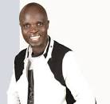

THESE MAKE MY DREAMS GROW BIGGER EACH DAY AS THEY SUCCEED
For any one to achieve bigger plans in life, there must be driving agents that escort him or her and in this, these people have played a vital role in my modelling up as someone also useful to my entire society and the people l live/ reside with in person.
At first, l never thourht of any one to ever influence my life and there fore l lived on my one and l was a roll moodel to my own self untill when l came to learn in life that its from those we admire that we take particular steps to success that w need to male each day coz there there are people already in the differrent future that wqe long and hope to be in, there fore l decided to formulate my own areas of interest and have different personalities of great influence and therefore, these have really made a great bigup towards my general makeup and actegorically, they can be categorised differently such as the following;
- David Lutalo
- Amasanyu mubufumbo,
- Engumba zange mubibaawo,
- Yankutudde.
- Ronald Mayinja. 
- Njakubeerawo.
- Lwaaki tulinda.
- Njagaza kajanja.
- Lucky Dube.
- bless the women,
- Born in africa,
- Freedom fighter,
- Mr Robert Kyagulanyi Ssentamu,
- The late Cool Muamer Abu Minyar El Gadaffi
- Bill Gates;
Role models in music include;

He has inspired me so much most especially in the music industry with his teaching and morally edifying songs;
I like the way he makes compositions about different topics and he uses quiet good information and wordings as you can witness;
I like this one coz hes a legendary and he did much to fight for the rights of African and to spread raggea music well as the rights and behaviour of raster men;
Role models in politics;
He has not been in it for long but he quiet also potrays some good political character well as ambitions in leading people towards a common goal, he has a good ideological reasoning and on top of that, he has a good following and most of the people have their hopes in him, from him, l know all things are possible just from his own making from scrutch to where he is;


He was a great man as well president of Lybia untill when he was killed, he accepted zero tolerance to humiliation and oppression, he liked well being of his country and his people as well and that makes him one ever to be remembered in history.
Indeed the above gives me courage ever one day to stand end lead my people to a common unified goal and a well established and harmmonised society favourable and worthy living in for every body.
Rich men role models;

Ever stood as world's greatest, l like his identrity as a son of a wood cutter to a high pitch by struggle personal hustle.
Whenever l see and hear about such men, it gives me courage that all things are possible and"BEFORE ONE DIES, ONE SHOULD NEVER REGRATE IN LIFE".